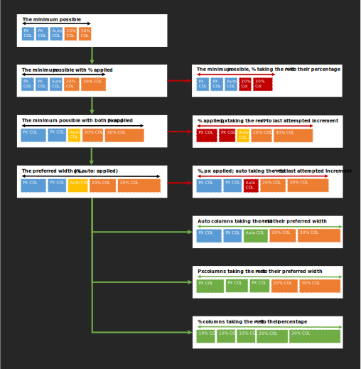

1. Introduction
This section is not normative
Many types of information (ex: weather readings collected over the past year) are best visually represented in a two-axis grid where rows represent one item of the list (ex: a date, and the various weather properties measured during that day), and where columns represent the successive values of an items property (ex: the temperatures measured over the past year).
Sometimes, to make the representation easier to understand, some cells of the grid are used to represent a description or summary of their parent row/column, instead of actual data. This happens more frequently for the cells found on the first row and/or column (called headers) or the cells found on the last row and/or column (called footers).
This kind of tabular data representation is usually known as tables. Tables layout can be abused to render other grid-like representations like calendars or timelines, though authors should prefer other layout modes when the information being represented does not make sense as a data table.
The rendering of tables in HTML has been defined for a long time in the HTML specification. However, its interactions with features defined in CSS remained for a long time undefined. The goal of this specification is to define the expected behavior of user agents supporting both HTML tables and CSS.
Please be aware that some behaviors defined in this document will not be the most logical or useful way of solving the problem they aim to solve, but such behaviors are often the result of compatibility requirements and not a deliberate choice of the editors of this specification. Authors wishing to use more complex layouts are encouraged to rely on more modern CSS modules such as CSS Grids.
2. Content Model
2.1. Table Structure
The CSS table model is based on the HTML4 table model, in which the structure of a table closely parallels the visual layout of the table. In this model, a table consists of an optional caption and any number of rows of cells.
In addition, adjacent rows and columns may be grouped structurally and this grouping can be reflected in presentation (e.g., a border may be drawn around a group of rows).
The table model is said to be "row primary" since authors specify rows, not columns, explicitly in the document language. Columns are derived once all the rows have been specified: the first cell of the first row belongs to the first column and as many other columns as spanning requires (and it creates them if needed), and the following cells of that row each belong to the next available column and as many other columns as spanning requires (creating those if needed); the cells of the following rows each belong to the next available column for that row (taking rowspan into account) and as many other columns as spanning requires (creating those if needed). (see §2.4 Spanning and §3.2 Dimensioning the row/column grid).
To summarize, an instance of the table model consists of:
-
Its table-root element containing:
-
One or more table rows, optionally in row groups,
- Each of them contaning one or more table cells
- Optionally: one or more table columns, optionally in column groups
- Optionally: a table caption.
-
One or more table rows, optionally in row groups,

The CSS model does not require that the document language include elements that correspond to each of these components. For document languages (such as XML applications) that do not have pre-defined table elements, authors must map document language elements to table elements; this is done with the display property.
The following display values assign table formatting rules to an arbitrary element:
- table (In HTML: TABLE)
- Specifies that an element defines a block-level table: it is a rectangular block that participates in a block formatting context.
- inline-table (In HTML: TABLE)
- Specifies that an element defines an inline-level table: it is a rectangular block that participates in an inline formatting context).
- table-row (In HTML: TR)
- Specifies that an element is a row of cells.
- table-row-group (In HTML: TBODY)
- Specifies that an element groups one or more rows.
- table-header-group (In HTML: THEAD)
- Like table-row-group, but for visual formatting, the row group is always displayed before all other rows and row groups and
after any top captions. Print user agents may repeat header rows on each page spanned by a table. If a table contains multiple elements
with
display: table-header-group, only the first is rendered as a header; the others are treated as if they haddisplay: table-row-group. - table-footer-group (In HTML: TFOOT)
- Like table-row-group, but for visual formatting, the row group is always displayed after all other rows and row groups and before any bottom captions.
Print user agents may repeat footer rows on each page spanned by a table.
If a table contains multiple elements with
display: table-footer-group, only the first is rendered as a footer; the others are treated as if they haddisplay: table-row-group. - table-column (In HTML: COL)
- Specifies that an element describes a column of cells.
- table-column-group (In HTML: COLGROUP)
- Specifies that an element groups one or more columns.
- table-cell (In HTML: TD, TH)
- Specifies that an element represents a table cell.
- table-caption (In HTML: CAPTION)
- Specifies a caption for the table.
All elements with
display: table-captionmust be rendered, as described in section 17.4.
Replaced elements with these display values are treated as their given display types during layout.
For example, an image that is set to display: table-cell will fill the available cell space, and
its dimensions might contribute towards the table sizing algorithms, as with an ordinary cell.
Elements with display set to table-column or table-column-group are not rendered (exactly as if they had display: none).
They are still useful, because they may have attributes which induce a certain style for the columns they represent.
2.1.1. Terminology
In addition to the table structure display types, the following wording is also being used in this spec:
- table-root box or element
- A table or inline-table box.
- table-non-root box or element
- A proper table child, or a table-cell box.
- table-row-grouping box or element
- A table-row-group, table-header-group, or table-footer-group box.
- table-track box or element
- A table-row, or table-column box.
- table-track-grouping box or element
- A table-row-grouping, or table-column-group box.
- proper table child box or element
- A table-track-grouping, table-track, or table-caption box.
- proper table-row parent box or element
- A table-root or a table-row-grouping box.
- table-internal box or element
- A table-cell, table-track or table-track-grouping box.
- tabular container
- A table-row or proper table-row parent box.
- consecutive boxes
- Two sibling boxes are consecutive if they have no intervening siblings other than, optionally, an anonymous inline containing only white spaces. A sequence of sibling boxes is consecutive if each box in the sequence is consecutive to the one before it in the sequence.
2.2. Fixup
Document languages other than HTML may not contain all the elements in the CSS 2.1 table model. In these cases, the "missing" elements must be assumed in order for the table model to work.
Any table-internal element will automatically generate necessary anonymous table objects around itself, if necessary. Any non-table descendant of a table-root must have a ancestors consisting of at least three nested objects corresponding to a table/inline-table element, a table-row element, and a table-cell element. Missing elements cause the generation of anonymous boxes according to the following rules:
2.2.1. Fixup Algorithm
For the purposes of these rules, out-of-flow elements are represented as inline elements of zero width and height. Their containing blocks are chosen accordingly.
The following steps are performed in three stages:
-
Remove irrelevant boxes:
- Children of a table-column are treated as if they had
display: none. - Children of a table-column-group which are not a table-column are treated as if they had
display: none. - Anonymous inline boxes which contains only white space,
are the first or last child of a tabular container,
and whose immediately preceding or following sibling (if any) is a table-non-root element,
are treated as if they had
display: none. - Anonymous inline boxes which contains only white space and
are between two immediate siblings each of which is a table-non-root element,
are treated as if they had
display: none.
- Children of a table-column are treated as if they had
-
Generate missing child wrappers:
- An anonymous table-row box must be generated around each sequence of consecutive children of a table-root box which are not proper table child boxes. !!Testcase
- An anonymous table-row box must be generated around each sequence of consecutive children of a table-row-grouping box which are not table-row boxes. !Testcase
- An anonymous table-cell box must be generated around each sequence of consecutive children of a table-row box which are not table-cell boxes. !Testcase
-
Generate missing parents:
- An anonymous table-row box must be generated around each sequence of consecutive table-cell box whose parent is not a table-row. Testcase
-
An anonymous table or inline-table box must be generated
around each sequence of consecutive proper table child box
which are misparented.
(If the box’s parent is an inline box, then an inline-table box must be generated; otherwise it must be a table box.)
- A table-row is misparented if its parent is neither a table-row-grouping nor a table-root box.
- A table-column box is misparented if its parent is neither a table-column-group box nor a table-root box.
- A table-row-grouping, table-column-group, or table-caption box is misparented if its parent is not a table-root box.
2.2.2. Examples
<div class="row"> <div class="cell">George</div> <div class="cell">4287</div> <div class="cell">1998</div> </div>
Here is the associated styles:
.row { display: table-row } .cell { display: table-cell }
After fixup, this will produce layout boxes as though this was the initial HTML:
<table> <tr> <td>George</td> <td>4287</td> <td>1998</td> </tr> </table>
In this example, three table-cell elements are assumed to contain the text in the ROWs. The text inside
of the divs with a display: table-row are encapsulated in anonymous inline boxes, as explained in visual formatting model:
<div class="inline-table"> <div class="row">This is the top row.</div> <div class="row">This is the middle row.</div> <div class="row">This is the bottom row.</div> </div>
.inline-table { display: inline-table; } .row { display: table-row; }
This will produce layout boxes as though this was the initial HTML:
<table> <tr> <td>This is the top row.</td> </tr> <tr> <td>This is the middle row.</td> </tr> <tr> <td>This is the bottom row.</td> </tr> </table>
2.3. Mapping between CSS & HTML attributes
The default style sheet for HTML4 illustrates how its model maps to css properties and values:
table { display: table } thead { display: table-header-group } tbody { display: table-row-group } tfoot { display: table-footer-group } tr { display: table-row } td, th { display: table-cell } colgroup { display: table-column-group } col { display: table-column } caption { display: table-caption } table, thead, tbody, tfoot, tr, td, th, colgroup, col, caption { box-sizing: border-box; } table { box-sizing: border-box; border-spacing: 2px; border-collapse: separate; text-indent: initial; } thead, tbody, tfoot, table > tr { vertical-align: middle; } tr, td, th { vertical-align: inherit; } td, th { padding: 1px; } th { font-weight: bold; } table, td, th { border-color: gray; } thead, tbody, tfoot, tr { border-color: inherit; } table[frame=box], table[frame=border], table[frame=hsides], table[frame=above], table[frame=below], table[frame=vsides], table[frame=lhs], table[frame=rhs] { border: 1px solid inset; } table:matches([rules=all], [rules=rows], [rules=cols], [rules=groups], [rules=none]) { border-collapse: collapse; border-style: hidden; } table:matches([rules=all], [rules=rows], [rules=cols], [rules=groups], [rules=none]), table:matches([rules=all], [rules=rows], [rules=cols], [rules=groups], [rules=none]) > :matches(thead,tbody,tfoot) > tr > :matches(th,td) { border-color: black; } table[border=$border] /* if(parseInt($border) > 0) */ { border: /*(parseInt($border) * 1px)*/ outset rgb(128, 128, 128); } table[border=$border] > :matches(thead,tbody,tfoot) > tr > :matches(th,td) /* if(parseInt($border) > 0) */ { border: 1px inset rgb(128, 128, 128); } table[rules=all] > :matches(thead,tbody,tfoot) > tr > :matches(th,td) { border: 1px solid grey; } table[rules=rows] > :matches(thead,tbody,tfoot) > tr > :matches(th,td) { border: 1px solid grey; border-left: none; border-right: none; } table[rules=cols] > :matches(thead,tbody,tfoot) > tr > :matches(th,td) { border: 1px solid grey; border-top: none; border-bottom: none; } table[rules=none] > :matches(thead,tbody,tfoot) > tr > :matches(th,td) { border: none; } table[rules=groups] > :matches(thead,tbody,tfoot) { border-top-width: 1px; border-top-style: solid; border-bottom-width: 1px; border-bottom-style: solid; } table[rules=groups] > colgroup { border-left-width: 1px; border-left-style: solid; border-right-width: 1px; border-right-style: solid; } table[frame=box], table[frame=border], table[frame=hsides], table[frame=above], table[frame=below], table[frame=vsides], table[frame=lhs], table[frame=rhs] { border-style: inset; } table[frame=below], table[frame=vsides], table[frame=lhs], table[frame=rhs] { border-top-style: hidden; } table[frame=above], table[frame=vsides], table[frame=lhs], table[frame=rhs] { border-bottom-style: hidden; } table[frame=hsides], table[frame=above], table[frame=below], table[frame=rhs] { border-left-style: hidden; } table[frame=hsides], table[frame=above], table[frame=below], table[frame=rhs] { border-right-style: hidden; } table[cellpadding=$x] > :matches(thead,tbody,tfoot) > tr > :matches(th,td) /* if(parseInt($x)>0) */ { padding: /*(parseInt($x) * 1px)*/; } table[cellspacing=$x] /* if(parseInt($x)>0) */ { border-spacing: /*(parseInt($x) * 1px)*/; } table[width=$w] /* if(parseInt($w) > 0) */ { width: /*(parseInt($w) * 1px)*/; } table[width=$w] /* if($w matches /(+|-|)([0-9]+([.][0-9]+|)|([.][0-9]+))[%]/) */ { width: /*(parseInt($w) * 1px)*/; } table[height=$h] /* if(parseInt($h) > 0) { height: /*(parseInt($h) * 1px)*/; } table[height=$h] /* if($h matches /(+|-|)([0-9]+([.][0-9]+|)|([.][0-9]+))[%]/) */ { height: /*(parseInt($h) * 1px)*/; } table[bgcolor=$color] { background-color: /*parseHTMLColor($color)*/; } table[align=left] { float: left; } table[align=right] { float: right; } table[align=center] { margin-left: auto; margin-right: auto; } caption[align=bottom i] { caption-side: bottom; } :matches(thead,tbody,tfoot,tr,td,th)[valign=top i] { vertical-align: top; } :matches(thead,tbody,tfoot,tr,td,th)[valign=middle i] { vertical-align: middle; } :matches(thead,tbody,tfoot,tr,td,th)[valign=bottom i] { vertical-align: bottom; } :matches(thead,tbody,tfoot,tr,td,th)[valign=bottom i] { vertical-align: baseline; } :matches(thead,tbody,tfoot,tr,td,th)[align=absmiddle i] { text-align: center; } :matches(colgroup,col,thead,tbody,tfoot,tr,td,th)[hidden] { visibility: collapse; } :matches(td,th)[nowrap] { white-space: nowrap; } :matches(td,th)[nowrap][width=$w] /* if(quirksMode && parseInt($w) > 0) */ { white-space: normal; }
2.4. Spanning
This section will explain what is spanning and how it will affect algorithms later in this spec.
We should define how spanning works, and define css properties for it.
3. Layout
3.1. Core principles
Unlike other block elements, tables do not fill their containing block by default. By default, the width of a table depends on the width required to fit its columns prefered width. The minimum width of a table is the width required to fit all its columns min-width and its undistributable spaces.
If the width assigned to a table is larger than its minimum width, the Available Width Distribution algorithm will adjust column widths in consequence.
This section overrides the general-purpose rules that apply to calculating widths described in other specifications.
In particular, if the margins of a table are set to 0 and the width to auto, the table will not automatically size to fill its containing block.
However, once the used value of width for the table is found (using the algorithms given below)
then the other parts of those rules do apply.
Therefore, a table can be centered using left and right auto margins, for instance.
3.2. Dimensioning the row/column grid
This section explains how to decide how many rows and columns a table has.
Like mentioned in the Table structure section, the amount of rows and columns defined in a table can be determined from the table structure.
-
If $box originates from an HTML $elm element,
- Clone that element and its attributes (but not its descendants) and return it;
-
Else,
- Create a new HTML $elm element with no attribute and return it
To find out how many columns and rows the row/column grid of a table contains, and where each cell element takes place in that grid, the user agent must convert the css table to its equivalent html markup, using the following algorithm:
- Map the table-root to a HTML element if needed
- While there is one, and in DOM order, map to a HTML element if needed every child box of the table-root, and append those to the <table> element.
- While there is one, and in DOM order, map to a HTML element if needed every non-mapped table-internal box of the table-root that is also a child of any already mapped box and append those to the element that was mapped to their parent box.
Add new css properties to control rowspan/colspan? Reuse grid ones?
Once this is done, apply the HTML5 Table Formatting algorithm, assign to the table-root element its correct amount of rows and columns (from its mapped element), and to each table-cell element its accurate table-row-start/table-column-start/table-row-span/table-column-span (from its mapped element).
To improve our compatibility with actual rendering, we may need to specify something along those lines:
"Modify the row/column grid such that
consecutive tracks spanned by the same set of cells
are merged into one single track
for the purpose of computing the layout of the table.
Change the spanning of the cells contained in those tracks
accordingly so that no difference is shown."
(see spanning-ghost-rows test cases)
3.3. Missing cells fixup
The following section clarifies and extends the CSS 2.1 statement saying that missing cells are rendered as if an anonymous table-cell box occupied their position in the grid (a "missing cell" is a cell in the row/column grid that is not occupied by an element or pseudo-element).
Once the amount of columns in a table is known, any table-row-group element must be modified such that each of its rows contains enough cells to fill all the columns of the table, when taking spanning into account. New table-cell pseudo-elements must be appended to its rows content until this condition is met.
Beside their display type, those pseudo-elements do not receive any specific or default styling, except where otherwise mentioned by this specification (meaning their background is “transparent”, their padding is “0px” and their border is “none” by default).
3.4. Table layout modes
This section covers the flags which modify the way tables are being laid out. There are three major flags for table layout: table-layout, border-collapse, and caption-side.
3.4.1. The Table-Layout property
| Name: | table-layout |
|---|---|
| Value: | normal | fixed |
| Initial: | separate |
| Applies to: | table-root elements. |
| Inherited: | yes |
| Percentages: | n/a |
| Media: | visual |
| Computed value: | as specified |
| Animatable: | no |
When the table-layout property has fixed as its value,
the aggregation algorithm for column sizing is not applied,
and the values determined for the first row of the table are used instead
(see §3.7.3 Computing Column Measures).
3.4.2. The Border-Collapse property
| Name: | border-collapse |
|---|---|
| Value: | separate | collapse |
| Initial: | normal |
| Applies to: | table-root elements. |
| Inherited: | yes |
| Percentages: | n/a |
| Media: | visual |
| Computed value: | as specified |
| Animatable: | no |
When the border-collapse property has collapse as its value,
other properties like border-spacing are not applied (see §3.5.2 Overrides applying in collapsed-borders mode),
and borders of adjacent cells are merged together such that each cell draws only half of the shared border
(see §3.6 Border-collapsing).
A table-root element is said to be rendered in collapsed mode in this case. Otherwhise, the table-root element is said to be rendered in separated mode.
3.4.3. The Caption-Side property
| Name: | caption-side |
|---|---|
| Value: | top | bottom |
| Initial: | top |
| Applies to: | table-caption elements
|
| Inherited: | yes |
| Percentages: | n/a |
| Media: | visual |
| Computed value: | as specified |
| Animatable: | no |
This property specifies the position of the caption box with respect to the table box. Values have the following meanings:
- top
- Positions the caption box above the table box.
- bottom
- Positions the caption box below the table box.
top-outside and bottom-outside on this property. #REF To align caption content horizontally within the caption box, use the text-align property.
In this example, the caption-side property places captions below tables. The caption will be as wide as the parent of the table, and caption text will be left-justified.
caption {
caption-side: bottom;
width: auto;
text-align: left
}
3.5. Style overrides
Some css properties behave differently inside css tables. The following sections list the exceptions and their effects.
3.5.1. Overrides applying in all modes
The following rules apply to all table elements, irrespective of the layout mode in use:
- The used value of display for table-track and table-track-grouping elements is forced to contents. This has the effect of not generating a box for these elements, and making their table-cell children direct layout children of their parent table-root element.
- The used value of margin for table-cell elements is forced to 0px.
- The used value of background longhands for table-cell elements is computed using a special background painting algorithm described in §4.3 Drawing cell backgrounds.
3.5.2. Overrides applying in collapsed-borders mode
When borders of a table are rendered in collapsed mode, the following rules apply:
- The used value of padding for the table-root element is forced to 0px.
- The used value of border-spacing for the table-root element is forced to 0px.
-
The used value of border-radius for table-cell elements is forced to 0px for all corners which are not shared with the table-root element.
For corners shared with the table-root element,
the used value of the corresponding border-…-radius property is set to
the used value of the corresponding property on the parent table-root element
if that value is bigger than the value which would be used otherwise.
Next, set the used values of the table-root element border radiuses
to the ones of their corresponding table-cell
(this will prevent the table radius to grow bigger than the corresponding cell).
This does not seem to be correct in either case, the cell border radius wins based on this test. Border-radius only works in IE/Edge and does not work in FF/Chrome. Actually, this isn’t even totally true, as box-shadow shows: https://jsfiddle.net/wazhrfe3/1/
- The used value of border longhands for table-root element and the table-cell elements it contains are computed using a special conflict resolution algorithm described in §3.6 Border-collapsing.
3.5.3. Overrides applying in separated-borders mode
When borders of a table are rendered in separated mode, the following rules apply:
- (none, for now)
...
- Each cell has an individual border.
This is a css default
- The border-spacing property specifies the distance between the borders of adjoining cells.
See §3.10 Position of cells and captions.
- In this space, the row, column, row group, and column group backgrounds are invisible,
allowing the table background to show through.
They don’t have any box at all now;
See §3.5.1 Overrides applying in all modes.
Their backgrounds are propagated to the cells;
See §4 Rendering
- Rows, columns, row groups, and column groups cannot have borders
(i.e., user agents must ignore the border properties for those elements).
They don’t have any box at all now;
See §3.5.1 Overrides applying in all modes.
3.6. Border-collapsing
This section explains what is border-collapsing, and how to apply it on a table.
This entire section is a proposal to make the rendering of collapsed borders sane. As implementations diverge very visibly, it is expected to require more discussion than some other parts. Since browsers handle this so differently, convergence cannot happen without reimplementation. A major concern for this proposal was to support as many cases as possible, and yet keep the effort required for a new implementation of tables as low as possible.
Background: CSS+HTML allow unprecedented combinations of border modes for table junctions, and it makes it difficult to support all cases properly; in fact some combinations are not well-posed problems, so no rendering algorithm could be optimal.
Because they grew from something simple (HTML) to something very complex (HTML+CSS), the current table rendering models (backgrounds and borders) used by web browsers are insane (in the sense they are buggy, not interoperable and not CSSish at all). Many usual CSS assumptions are broken, and renderings diverge widely.
This proposal aims at fixing this situation.
UAs must compute an initial left and right border width for the table by examining the first and last cells in the first row of the table. The left border width of the table is half of the first cell’s collapsed left border, and the right border width of the table is half of the last cell’s collapsed right border. If subsequent rows have larger collapsed left and right borders, then any excess spills into the margin area of the table.
3.6.1. Conflict Resolution for Collapsed Borders
When they are rendered in collapsed mode, table-root and table-cell elements sharing a border attempt to unify their borders so that they render using the same style, width, and color (whenever this is possible). This is accomplished by running the following algorithm.
3.6.1.1. Conflict Resolution Algorithm for Collapsed Borders
For any table-root element:
- Harmonize the table-root element border-{top,bottom,left,right}
with the corresponding border of all cells forming the border of the table (indenpendently),
without actually modifying the border properties of the table-root element.
Once this is done, set the table-root element border-{…}-width to half the maximum width found during the harmonization processes for that border, then set border-{…}-style to solid, and border-{…}-color to transparent.
Then, for any table-cell element C° related to that table-root element:
-
Resolve conflicts with border-right:
- Let C be an ordered set of table-cell element borders, sorted in Row/Column order of their parent cell; initially, let C contain only C°’s border-right
- Add to the set C the border-left of all cells located after C° sharing a section of their border-left with C°’s border-right
-
Repeat the following two instructions, until no new cell is added to C:
- For all newly-added cells Ci having a rowspan greater than one, add to the set C the border-right of all cells located before Ci sharing a section of their border-right with Ci’s border-left
- For all newly-added cells Ci having a rowspan greater than one, add to the set C the border-left of all cells located after Ci sharing a section of their border-left with Ci’s border-right
- Harmonize the conflicting borders of C
-
Resolve conflicts with border-bottom:
- Let C be an ordered set of table-cell element borders, sorted in Row/Column order of their parent cell; initially, let C contain only C°’s border-bottom
- Add to the set C the border-top of all cells located after C° sharing a section of their border-top with C°’s border-bottom
-
Repeat the following two instructions, until no new cell is added to C:
- For all newly-added cells Ci having a colspan greater than one, add to the set C the border-bottom of all cells located before Ci sharing a section of their border-bottom with Ci’s border-top
- For all newly-added cells Ci having a colspan greater than one, add to the set C the border-top of all cells located after Ci sharing a section of their border-top with Ci’s border-bottom
- Harmonize the conflicting borders of C
-
Divide the used width of all borders by two.
This effect will be compensated at rendering time wherever needed, but is required for layout correctness. (see §4.4 Drawing borders (collapsed mode))
https://jsfiddle.net/bn3d1sm4/
https://jsfiddle.net/bn3d1sm4/1/
https://jsfiddle.net/bn3d1sm4/2/
…
https://jsfiddle.net/bn3d1sm4/15/
3.6.1.2. Harmonization Algorithm for Collapsed Borders
Given an ordered set of borders (BC1, BC2, … located in cells C1, C2, …) execute the following algorithm to determine the used value of the border properties for those conflicting borders.
- Set CurrentlyWinningBorderProperties to “border: 0px none transparent”
-
For each border BCi:
- Consider the BCi border’s properties
-
If the border separates two columns:
- For each border BCi: Find the table-column element in which the Ci cell is located, if any. If the BCi border is such that there is a border of the table-column element that would be drawn contiguously to it, consider its border’s properties.
- For each border BCi: Find the table-column-group element in which the Ci cell is located, if any. If the BCi border is such that there is a border of the table-column-group element that would be drawn contiguously to it, consider its border’s properties.
-
If the border separates two rows:
- For each border BCi: Find the table-row element in which the Ci cell is located, if any. If the BCi border is such that there is a border of the table-row element that would be drawn contiguously to it, consider its border’s properties.
- For each border BCi: Find the table-row-group element in which the Ci cell is located, if any. If the BCi border is such that there is a border of the table-row-group element that would be drawn contiguously to it, consider its border’s properties.
- Return CurrentlyWinningBorderProperties
3.6.1.3. Specificity of a border style
Given two borders styles, the border style having the most specificity is the border style which…
- … has hidden as border-style, if only one does
- … has the biggest border-width, once converted into css pixels
- … has the border-style who comes first in the following list: double, solid, dashed, dotted, ridge, outset, groove, inset, none
If none of these criterion matches, then both borders share the same specificity.
3.7. Computing table measures
3.7.1. Computing Undistributable Space
This section will deal with the border spacings of the separated border mode.
| Name: | border-spacing |
|---|---|
| Value: | <length> <length>? |
| Initial: | 0px 0px |
| Applies to: | table-root elements when border-collapse is separate.
|
| Inherited: | yes |
| Percentages: | n/a |
| Media: | visual |
| Computed value: | two absolute lengths |
| Animatable: | yes |
The lengths specify the distance that separates adjoining cell borders.
If one length is specified, it gives both the horizontal and vertical spacing. If two are specified, the first gives the horizontal spacing and the second the vertical spacing.
Lengths may not be negative.
The distance between the table border and the borders of the cells on the edge of the table is the table’s padding for that side, plus the relevant border spacing distance.
3.7.2. Computing Cell Measures
This section will deal with the measurement of a cell.
The following terms are parameters of tables or table cells. These parameters encapsulate the differences between tables with different values of border-collapse (separate or collapse) so that the remaining subsections of this section do not need to refer to them differently.
- cell intrinsic offsets
-
The cell intrinsic offsets is a term to capture the parts of padding and border of a table cell
that are relevant to intrinsic width calculation.
It is a set of computed values for border-left-width, padding-left, padding-right, and border-right-width
(along with zero values for margin-left and margin-right)
defined as follows:
- In separated mode: the computed horizontal padding and border of the table-cell
- In collapsed mode: the computed horizontal padding of the cell and, for border values, the used border-width values of the cell (half the winning border-width)
- table intrinsic offsets
-
The table intrinsic offsets is a term to capture the parts of the padding and border of a table
that are relevant to intrinsic width calculation.
It is a set of computed values for border-left-width, padding-left, padding-right, and border-right-width
(along with zero values for margin-left and margin-right)
defined as follows:
- In separated mode: the computed horizontal padding and border of the table-root
- In collapsed mode: the used border-width values of the cell (half the winning border-width)
The margins are not included in the table intrinsic offsets because handling of margins depends on the caption-side property.
But doesn’t that break handling of percentage padding? I don’t think so because they are resolved based on parent anyway - total horizontal border spacing
-
The total horizontal border spacing is defined for each table:
-
For tables rendered in separated mode containing at least one column, the horizontal component of the computed value of
the border-spacing property times one plus the number of columns in the table in which cells originate
Isn’t that better solved by the proposal to fix the row-grid in §3.2 Dimensioning the row/column grid?
- Otherwise, 0
-
For tables rendered in separated mode containing at least one column, the horizontal component of the computed value of
the border-spacing property times one plus the number of columns in the table in which cells originate
- outer min-content and outer max-content widths
-
The outer min-content and max-content widths are defined for table cells, columns, and column groups.
The width, min-width, and max-width values used in these definitions are those defined above:
-
The outer min-content width of a table cell is
max(min-width, min(max-width, min-content width))adjusted by the cell intrinsic offsets.Should max-width really be able to override the min-content width? An alternative expression ismax(min-width, min-content width)@ FR: I think we should choose this option.Should min-width affect outer min-content widths at all? @ FR: I think it should, yes. That’s interoperable. -
The outer min-content width of a table column or column group is
min-width.Should min-width affect outer min-content widths at all? -
The outer max-content width of a table cell in a non-constrained column is
max(min-width, min(max-width, max-content width))adjusted by the cell intrinsic offsets. -
The outer max-content width of a table cell in a constrained column is
max(min-width, min(max-width, max(width, min-content width)))adjusted by the cell intrinsic offsets. - The outer max-content width of a table column or column group is
max(min-width, min(max-width, width)).
-
The outer min-content width of a table cell is
- percentage contributions
- The percentage contribution of a table cell, column, or column group
is defined in terms of the computed values of width, max-width, and min-width that have computed values that are percentages:
max(percentage min-width, min(percentage width, percentage max-width)).
If the computed values are not percentages, then0%is used for width or min-width, and aninfinitepercentage is used for max-width.
3.7.3. Computing Column Measures
This section will deal with the measurement of a column.
We mention earlier that fixed tables use a different algorithm for columns aggregation. We need to define it.
This subsection defines terms for various parameters associated with each column of a table. These parameters are used in the following two subsections as part of the rules for computing intrinsic widths of tables and computing the column widths of a table.
This needs to account for character-alignment of cells ('<string>' values of the text-align property). This requires (based on the 9 March 2011 editor’s draft of css3-text) separately tracking max-content widths for the part of the column before the center of the alignment string and the part of the column after the center of the alignment string. For tracking min-content widths, there are two options: either not track them, or track three values: two values as for max-content widths for any cells that do not have break points in them, and a fourth value for any cells that do have break points in them (and to which character alignment is therefore not mandatory).
The handling of the max-width property with this algorithm is very poor. It ought to have an effect stronger than the one it has on the outer intrinsic widths of the element on which it is specified. It probably ought to be a separate parameter of the column (though how it interacts with the min-content width would need to be defined).
The way this describes distribution of widths from column-spanning cells is wrong. For min-content and max-content widths it should refer to the rules for distributing excess width to columns for intrinsic width calculation. For percentages it needs to ensure that it doesn’t distribute widths to columns that do not have originating cells.
- intermediate min-content width for span 1
-
The largest of:
- the outer min-content width of the column group, if any
- the outer min-content width of the column, if any
- the outer min-content width of each cell in the column whose column-span property has a computed value of 1
- intermediate max-content width for span 1
-
The largest of:
- the outer max-content width of the column group, if any
- the outer max-content width of the column, if any
- the outer max-content width of each cell in the column whose column-span property has a computed value of 1
- intermediate intrinsic percentage width for span 1
- The largest of the percentage contributions of each cell in the column whose column-span property has a computed value of 1, of the column (if any), and of the column group (if any)
- intermediate min-content width for span N (N > 1)
-
the largest of the intermediate min-content width for span N-1 and the contributions
of the cells in the column whose column-span property has computed value N,
where the contribution of a cell is the result of taking the following steps:
- Define the baseline (min-content / max-content) width as the sum of the intermediate (min-content / max-content) widths for span N-1 of all columns that the cell spans.
- Define the baseline border spacing as the sum of the and the horizontal border-spacing for any columns spanned by the cell, other than the one in which the cell originates, in which cells originate.
-
The contribution of the cell is the sum of:
- the min-content width of the column for span N-1
-
the product of:
-
the ratio of:
- the intermediate max-content width for span N-1 of the column minus the intermediate min-content width for span N-1 of the column, to
- the baseline max-content width minus the baseline min-content width
- the outer min-content width of the cell minus the baseline min-content width and the baseline border spacing, clamped to be at least 0 and at most the difference between the baseline max-content width and the baseline min-content width
-
the ratio of:
-
the product of:
- the ratio of the intermediate max-content width for span N-1 of the column to the baseline max-content width
- the outer min-content width of the cell minus the baseline max-content width and baseline border spacing, or 0 if this is negative
- intermediate max-content width for span N (N > 1)
-
The largest of the intermediate max-content width
for span N-1 and the contributions of the cells in the column whose column-span property has computed value N,
where the contribution of a cell is the result of taking the following steps:
- Define the baseline max-content width as the sum of the intermediate max-content widths for span N-1 of all columns that the cell spans.
- Define the baseline border spacing as the sum of the and the horizontal border-spacing for any columns spanned by the cell, other than the one in which the cell originates, in which cells originate.
-
The contribution of the cell is the sum of:
- the max-content width of the column for span N-1
-
the product of:
- the ratio of the intermediate max-content width for span N-1 of the column to the baseline max-content width
- the outer max-content width of the cell minus the baseline max-content width and the baseline border spacing, or 0 if this is negative
- intermediate intrinsic percentage width for span N (N > 1)
-
If the intermediate intrinsic percentage width for span N-1 is greater than 0%,
then the intermediate intrinsic percentage width for span N is
the same as the intermediate intrinsic percentage width for span N-1.
Otherwise, it is the largest of the contributions of the cells in the column whose column-span property has computed value N, where the contribution of a cell is the result of taking the following steps:- Start with the percentage contribution of the cell.
- Subtract the intermediate intrinsic percentage width for span N-1 of all columns that the cell spans. If this gives a negative result, change it to 0%.
-
Multiply by the ratio of
- the column’s non-spanning max-content width to
- the sum of the non-spanning max-content widths of all columns spanned by the cell that have an intermediate intrinsic percentage width for span N-1 equal to 0%.
- min-content width
- the intermediate min-content width for span N, where N is the number of columns in the table
- max-content width
- the intermediate max-content width for span N, where N is the number of columns in the table
- intrinsic percentage width
-
the smaller of:
- intermediate intrinsic percentage width for span N, where N is the number of columns in the table
- 100% minus the sum of the intrinsic percentage width of all prior columns in the table (further left (right) when direction is "ltr" ("rtl"))
The clamping of the total of the intrinsic percentage widths of columns to a maximum of 100% means that the table layout algorithm is not invariant under switching of columns.
- constrainedness
- A column is constrained if the column group (if any), the column (if any), or any of the non-column-spanning cells in the column has a computed width that is not "auto", and is not a percentage.
3.7.4. Computing the table width
This section will deal with the measurement of a table (width).
We need to choose how captions affect the sizing of a table (see Alernatives)
Alternative I:
This is what was specced in CSS 2.1.
The caption width minimum (CAPMIN) is determined by calculating for each caption the minimum caption outer width as the MCW of a hypothetical table cell that contains the caption formatted as "display: block". The greatest of the minimum caption outer widths is CAPMIN.
Column and caption widths influence the final table width as follows:
- If the table-root element’s width property has a computed value (W) other than
auto, the used width is the greater of W, CAPMIN, and the minimum width required by all the columns plus cell spacing or borders (MIN). If the used width is greater than MIN, the extra width should be distributed over the columns. See §3.8 Available Width Distribution. - If the table-root element has 'width: auto', the used width is the greater of the table’s containing block width, CAPMIN, and MIN. However, if either CAPMIN or the maximum width required by the columns plus cell spacing or borders (MAX) is less than that of the containing block, use max(MAX, CAPMIN) instead.
Alternative II:
This is what was specced by David Baron.
Gecko also supports vertical-mode-captions; Edge is buggy. Test case
This specification currently defines the intrinsic widths of tables (including inline-tables) as a parameter of the table excluding its caption, but the outer intrinsic widths of tables as a parameter of the table including its caption. This distinction is needed because the intrinsic widths exclusive of the caption are critical to the final table layout algorithm. However, it may be better to have a separate term for these parameters rather than overloading these existing terms by adding this strange distinction.
The min-content width of a table-root is the sum of the min-content widths of the columns and the total horizontal border spacing of the table.
The max-content width of a table-root is the sum of the total horizontal border spacing of the table and the largest of:
- the sum of the max-content widths of the columns
-
the small percentage contribution of each of the columns,
where the small percentage contribution of a column is defined as the ratio of
- the column’s max-content width to
- its intrinsic percentage width (where 100% == 1.0)
This ensures that cells, columns, or column groups with small percentage widths have those percentage widths satisfied when possible. -
the large percentage contribution of the table, which is the ratio of
- the sum of the max-content widths of all the columns whose intrinsic percentage width is zero to
- 100% (1.0) minus the sum of the intrinsic percentage widths of the columns,
This ensures that cells, columns, or column groups with large percentage widths have those percentage widths satisfied when possible.
The outer min-content width of the non-caption part of a table-root is defined to be max(min-width, the min-content width of the table, min(width, max-width)) adjusted by the table intrinsic offset.
The outer min-content width of a table-root is defined to be the larger of:
- the outer min-content width of the caption
- the sum of the outer min-content width of the non-caption part of the table and the margin values used to compute the outer max-content/min-content width
The outer max-content width of the non-caption part of a table-root is defined to be max(min-width, min-content, min(width, max-width, max-content)) adjusted by the table intrinsic offset.
The outer max-content width of a table-root is defined to be the larger of:
- the outer max-content width of the caption
- the sum of the outer max-content width of the non-caption part of the table and the margin values used to compute the outer max-content/min-content width
3.7.5. Computing the table height
This section will deal with the measurement of a table (height).
3.8. Available Width Distribution
3.8.1. Core principles
This section is not normative.
This section should get an editorial review to use the same terms as the other sections.
3.8.1.1. Rules
Ideally, each column should get its preferred width. However, tableUsedWidth may not be big enough or small enough for the satisfactory result.
We follow three rules here when determining column used width (columnUsedWidth):
Rule 1: When assigning preferred widths, specified percent columns have a higher priority than specified unit value columns, which have a higher priority than auto columns.
Rule 2: Columns in the same category follow the same distribution method.
For example, they all get columnMinWidth or they all get columnPreferredWidth, etc.
There is one exception to this rule.
When applying columnPreferredPercent on a percent column,
the computed unit value may be smaller than columnMinWidth.
In this case, the column will be assigned its columnMinWidth
though the percent column group as a whole is still regarded
as being assigned the columnPreferredWidth.
Rule 3: The sum of columnUsedWidth should be equal to tableUsedWidth.
3.8.1.2. Available sizings
All three types of columns have the following possible used widths.
- columnMinWidth
- columnMinWidth + delta:
A value between columnMinWidth and columnPreferredWidth-or-columnPreferredPercent - columnPreferredWidth (for auto and specified unit columns) or
columnPreferredPercent (for specified percent columns) -
columnPreferredWidth-or-columnPreferredPercent + delta
A value larger than columnPreferredWidth-or-columnPreferredPercent3.8.2. Distribution algorithm
When a table is laid out at a given used width, the used width of each column must be determined as follows.
For the purpose of this algorithm, we clarifty that the assignable table width is the used width of the table minus the total horizontal border spacing.
- Define the min-content guess as the set of column width assignments where each column is assigned its min-content width.
-
Define the min-content-percentage guess as the set of column width assignments where:
-
each column with an intrinsic percentage width greater than 0%
is assigned the larger of:
- its intrinsic percentage width times the assignable width and
- its min-content width.
- all other columns are assigned their min-content width.
-
each column with an intrinsic percentage width greater than 0%
is assigned the larger of:
-
Define the min-content-specified guess as the set of column width assignments where:
-
each column with an intrinsic percentage width greater than 0%
is assigned the larger of:
- its intrinsic percentage width times the assignable width and
- its min-content width, and
- any other column that is constrained is assigned its max-content width, and
- all other columns are assigned their min-content width.
-
each column with an intrinsic percentage width greater than 0%
is assigned the larger of:
-
Define the max-content guess as the set of column width assignments where:
-
each column with an intrinsic percentage width greater than 0%
is assigned the larger of:
- its intrinsic percentage width times the assignable width and
- its min-content width
- all other columns are assigned their max-content width.
Note that the assignable width is greater than or equal to the table width using the min-content guess, and that the widths for each column in the four guesses (min-content guess, min-content-percentage guess, min-content-specified guess, and max-content guess) are in nondecreasing order.If the assignable table width is less than or equal to the max-content guess, the used widths of the columns must be the linear combination (with weights adding to 1) of the two consecutive guesses whose width sums bound the available width.
Otherwise, the used widths of the columns are the result of starting from the max-content guess and distributing the excess width to the columns of the table according to the rules for distributing excess width to columns for used width calculation.
The following schema describes the algorithm in a different way, to make it easier to understand.
Overview of the width distribution algorithm. Not normative. Edge and Chrome ignores "min-width: %" while Firefox applies it properly. Firefox continues to apply a "min-width: %" when a "width: px" is specified (the width is ignored). We should decide on what is the right behavior and make sure it is written in the spec.
3.8.2.1. Distributing excess width to columns
The rules for distributing excess width to columns can be invoked in two ways:
- for distributing the excess width of a table to its columns during the computation of the used widths of those columns (for used width calculation), or
- for distributing the excess max-content or min-content width of a column-spanning cell to the max-content or min-content widths of the columns it spans (for intrinsic width calculation).
The rules for these two cases are largely the same, but there are slight differences.
The remainder of this section uses the term distributed width to refer to the one of these widths that is being distributed, and the excess width is used to refer to the amount by which the width being distributed exceeds the sum of the distributed widths of the columns it is being distributed to.
- If there are non-constrained columns that have originating cells with intrinsic percentage width of 0% and with nonzero max-content width (aka the columns allowed to grow by this rule), the distributed widths of the columns allowed to grow by this rule are increased in proportion to max-content width so the total increase adds to the excess width.
- Otherwise, if there are non-constrained columns that have originating cells with intrinsic percentage width of 0% (aka the columns allowed to grow by this rule, which thanks to the previous rule must have zero max-content width), the distributed widths of the columns allowed to grow by this rule are increased by equal amounts so the total increase adds to the excess width.
- Otherwise, if there are (constrained) columns with intrinsic percentage width of 0% and with nonzero max-content width (aka the columns allowed to grow by this rule, which, due to other rules, must have originating cells), the distributed widths of the columns allowed to grow by this rule are increased in proportion to max-content width so the total increase adds to the excess width.
- Otherwise, if there are columns with intrinsic percentage width greater than 0% (aka the columns allowed to grow by this rule, which, due to other rules, must have originating cells), the distributed widths of the columns allowed to grow by this rule are increased in proportion to intrinsic percentage width so the total increase adds to the excess width.
- Otherwise, the distributed widths of all columns that have originating cells are increased by equal amounts so the total increase adds to the excess width.
What if no columns have originating cells? Should the originating cells condition in the previous paragraph just be removed, or should, there be an additional "Otherwise" here?
3.9. Available Height Distribution
3.9.1. Core principles
Decide what to do for height distribution.
Should we use the same algorithm as §3.8 Available Width Distribution with different metrics?Investigations on height distribution
Initial analysis shows that there are indeed similarities between width and height distribution. There are also differences which I described here below:
In many case, all browsers apply a distribution algorithm that favors percentages over pixels over auto. Case 6.
A difference with the width distribution algorithm is that if the sum of all rows' heights is higher than 100%, then all browsers enter a completely different mode. Case 7. NOTE: The sum counts as well percentage heights and pixels heights, since at this point you can safely resolve percentages.
In this case, pixel-tracks are sized properly first. Then, percentage tracks get the remaining space proportionally to their height percentage up to their height percentage. Finally, auto tracks get to fill the remaining space, if there is any auto track. If there is none, percentage tracks continue growing above their height percentage until all the space is filled. Case 9.
The height distribution algorithm also caps the sum of percentage heights to 100% in all browsers but Edge. That means that some rows get an arbitrary 0% height. Case 8.
In Edge and Firefox, empty tracks do not get an increased size by this distribution if there are filled auto tracks. In Chrome, empty tracks count as distributable tracks as well even if there are other auto tracks.
- Case 1: height vs width
- Case 2: height vs width
- Case 3: height vs width
- Case 4: height vs width
- Case 5: height vs width
Intersting test cases about min-content and content using percentage sizes:
Chrome and Edge apply percentages on the final layout. All browsers work around them during the first pass by considering them 0% (Chrome) or by ignoring the declaration (Edge, Firefox). The difference of choice is visible in Case 12. Case 13.3.9.2. Distribution algorithm
TODO
3.10. Position of cells and captions
This section will explain where cells and captions should be rendered.
We have to decide whether we want captions to act like a row, or be independant. Right now their existence is eluded to avoid answering the question. !!TestcaseWe have to decide what visibility:collapse does. My proposal is to do like "hidden" but in addition use the following formula to shift back the following rows/columns. The total width/height of the table would not be affected, only the cells position would. !!Testcase. !!Testcase. !!Testcase.Once the width of each column, and height of each row has been determined, the position of any table cell C is defined as the rectangle whose:
-
width/height is the sum of:
- the widths/heights of all spanned columns/rows
- the horizontal/vertical border-spacing times the amount of spanned columns/rows minus one
-
left/top location is the sum of:
- the widths/heights of all previous columns/rows
- the horizontal/vertical border-spacing times the amount of previous columns/rows plus one
If the table layout mode is "fixed", the content of some cells may exceed the available horizontal space, and cause an overflow. Such overflow should behave exactly like if the cell was an absolutely positioned display:block box. !Testcase !Testcase Testcase
4. Rendering
4.1. Paint order of cells
Table cells are painted in a table-root in DOM order as usual, independently of where cells end up actually being drawn.
4.2. Empty cell rendering (separated mode)
Cells are empty unless they contain one or more of the following:
- floating content, or
- in-flow content (other than white space that has been collapsed away by the white-space property handling).
Name: empty-cells Value: show | hide Initial: show Applies to: table-cellelementsInherited: yes Percentages: n/a Media: visual Computed value: as specified Animatable: no In collapsed mode, this property has no effect.
In separated mode, this property controls the rendering of borders and backgrounds around cells that have no visible content.
When this property has the value
hide, no borders or backgrounds are drawn around/behind empty cells.Furthermore, if all the cells in a row have a value of
hideand have no visible content, then the row has zero height and the vertical border-spacing applies to one side of the row only.Moreover, do we even need this behavior? !!TestcaseFor example, take the following markup and css:
<table> <td><span></span></td> <td></td> <td><span></span></td> </table>
table { width: 500px; height: 300px; empty-cells: hide; } table { background: black; border: 10px solid black; } td { background: white; } table { border-spacing: 0px; } td { padding: 0; }
The correct rendering of this code snippet is depicted here:

Rendering of three columns whose middle one is hidden by empty-cells:hide 4.3. Drawing cell backgrounds
In addition to its own background, table-cell elements also render the backgrounds of the table-track and table-track-grouping elements in which they belong. This is actually different from simply inheriting their background because the background-origin and background-size computations will actually be done on the bounds of the grouping elements, and not on those of the cell.
For the purposes of finding the background of each table cell, the different table elements may be thought of as being on six superimposed layers. The background set on an element in one of the layers will only be visible if the layers above it have a transparent background.

Schema of table layers. - The table background is being rendered by the table, and does not affect the cell background.
- The first background drawn by a cell is the background of its originating column group. For the purpose of background-positioning, it is expected that a column group occupies the largest possible area a single cell could occupy in the row/column grid while originating in the column group and not entering any column not part of the column group.
- The second background drawn by a cell is the background of its originating column. For the purpose of background-positioning, it is expected that a column occupies the largest possible area a single cell could occupy in the row/column grid while originating in the column and not entering any other column.
- The third background drawn by a cell is the background of its originating row group. For the purpose of background-positioning, it is expected that a row group occupies the largest possible area a single cell could occupy in the row/column grid while originating in the row group and not entering any row not part of the row group.
- The fourth background drawn by a cell is the background of its originating row. For the purpose of background-positioning, it is expected that a row occupies the largest possible area a single cell could occupy in the row/column grid while originating in the row and not entering any other row.
- The fifth background drawn by a cell is its own background. This is the one that appears on top once all backgrounds have been rendered.
As the figure above shows, although all rows contain the same number of cells, not every cell may have specified content. In separated mode, if the value of their empty-cells property is
hide, these "empty" cells are not rendered at all, as ifvisibility: hiddenwas specified on them, letting the table background show through.4.4. Drawing borders (collapsed mode)
When a table is rendered in collapsed mode, the rendering of its borders on and those of its table-cells is modified. The following rules describe in which way.
4.4.1. Drawing table-root elements borders (collapsed mode)
Borders of a table-root element are not rendered in collapsed mode, except if the border-image property is set.
In this case, the border is drawn as if the table border was twice as big as its used value specify, and as if that excess was rendered inside the padding area of the table-root element.
4.4.2. Drawing table-cell elements borders (collapsed mode)
Borders of a table-cell element are rendered in collapsed mode as if the cell border was twice as big as its used value specify, and as if that excess was rendered in the margin area of the cell, with the added constraint that for each side of the border which isn’t located at one of the the table edges, the border is actually clipped to the border-box drawing area as its real used value define except if the border-image property is set.
If applying the previously-mentioned clipping behavior results in clipping a border over a non-integer amount of device pixels, browsers may decide to snap the clipping area to a device pixel instead by ceiling the x- and y-values of the clipping area. Ceiling the values ensures that in a normal writing mode, the cell which gets the contested pixels between multiple cells is actually the most top left one, which has a greater specificity than the other ones according to this spec. See §4.1 Paint order of cells and §3.6.1.1 Conflict Resolution Algorithm for Collapsed Borders.
4.4.3. Border styles (collapsed mode)
Some of the values of the border-style have different meanings in tables in collapsed mode than for other elements. Those definitions override the default behavior for border-style values defined in the Backgrounds and Borders specification.
-
hidden
-
Same as
none, but also inhibits any other border (see §3.6.1.3 Specificity of a border style). -
inset
-
Same as
ridge. -
outset
-
Same as
groove.
5. List of bugs being tracked
This section is not normative.
-
Align=center attribute overrides css margins in Edge Chrome and Firefox let CSS win.
Edge hides every border + table/row-group/row background.
This specification says that Chrome and Firefox are right.
§2.3 Mapping between CSS & HTML attributes -
Chrome applies nowrap quirks mode fix in DOCTYPE documents too Edge and Firefox do not apply the fix in normal mode.
Chrome also applies it for css widths, which is not what the spec says to do.
The WHATWG spec says that Chrome is wrong.
This spec is aiming to state the same thing.
§2.3 Mapping between CSS & HTML attributes -
Edge does not account for widths of spanned cells Chrome and Firefox merge the two columns so are not affected.
Edge does not then is confused about what to do.
The specs says that Edge is wrong.
§3.2 Dimensioning the row/column grid -
Align=center attribute overrides css margins in Edge Edge has issues with percentage widths.
This specification should say that Chrome and Firefox are right, I guess.
§3.7.2 Computing Cell Measures -
Table boxes should be wide enough to contain the caption Chrome uses the CSS21 algorithm that fulfill this.
Firefox and Edge use David Baron’s algorithm that doesn’t.
This specification has no opinion yet on the matter.
Chrome behavior is simpler to spec but not intuitive.
§3.7.4 Computing the table width -
Tables containing no row cannot have height in Chrome, but can in Edge/Firefox Chrome has table height = 0px.
Firefox and Edge have table height = specified height.
This specification has no opinion yet on the matter.
Firefox and Edge match author intentions better.
§3.7.5 Computing the table height -
Table-layout:fixed causes different width distribution in Chrome Chrome starts to value px then percentages.
Others continue to value percentage then px.
This specification has no opinion yet on the matter.
It is intended to specify the Edge/Firefox behavior.
§3.8 Available Width Distribution -
Chrome distributes the height to each row differently then IE and firefox Chrome distributes rather equally.
Edge and Firefox work more similarly to width distribution.
This specification has no opinion yet on the matter.
I think it makes sense to behave similarly for width and height, though.
§3.9 Available Height Distribution -
Height of rows which can overflow varies in Chrome vs Edge (percentage heights during min-height computation) Chrome chooses table constraints over the no-scroll constraint.
Edge and Firefox do the opposite.
This specification has no opinion yet on the matter.
Edge’s behavior is right by default due to CSS Sizing, though.
It would make sense to do what Chrome is doing when elements have non-visible overflow-y.
§3.9 Available Height Distribution #REF -
Height specified on row groups is not interoperable Chrome ignores the height.
Firefox respects the height.
IE applies the height to each cell.
This specification has no opinion yet on the matter.
An author would expect the Firefox behavior.
§3.9 Available Height Distribution -
Min-Height specified on rows is not interoperable Chrome and Firefox ignore the height.
Edge applies the height.
This specification has no opinion yet on the matter.
An author would expect the Edge behavior.
§3.9 Available Height Distribution -
Table with interleaved td[rowspan] rendered wrong in IE (145069) Edge height-sizing has issues with this crossed-rowspan table.
There is no doubt this is a bug, but it is a good test case for the algorithm.
§3.9 Available Height Distribution -
Row with explicit 'visibility:visible' lose background color when parent table has 'visibility: hidden' Chrome only hides table background + border.
Firefox hides table background + border, and row-group background.
Edge hides every border + table/row-group/row background.
This specification currently says that Chrome is right.
§4.3 Drawing cell backgrounds
6. (link here for missing sections)
-
each column with an intrinsic percentage width greater than 0%
is assigned the larger of: